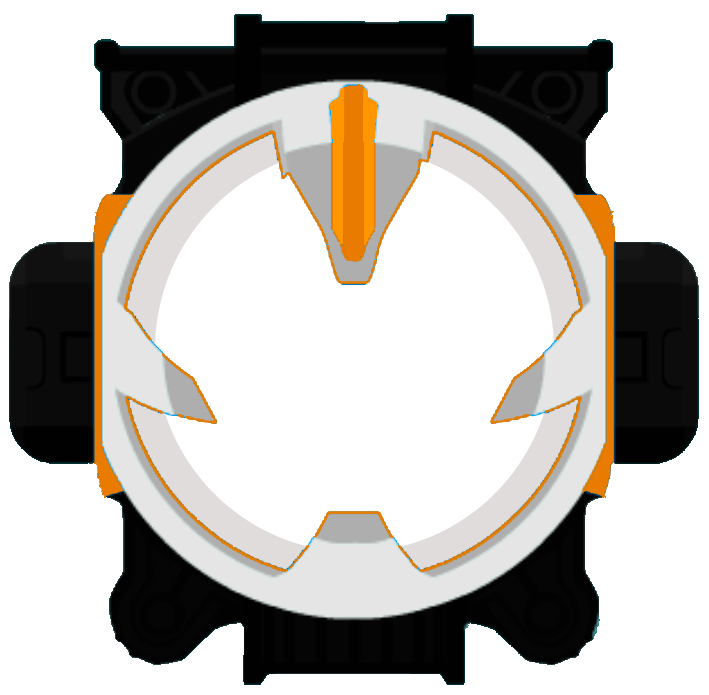
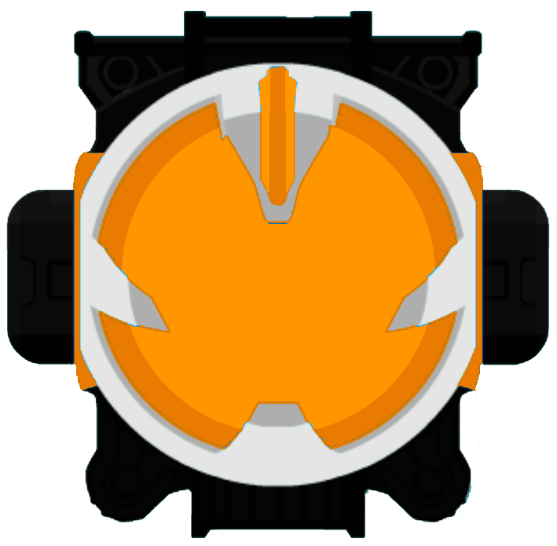

Приветствую. Я - Скорый Дэн
Добро пожаловать на мою личную старницу. Т-То есть, страницу.
Добро пожаловать на мою личную старницу. Т-То есть, страницу.
Что я могу рассказать о себе... Ну, я:
1. Знаю английский на уровне C1, что уже, как я считаю, достижение;
2. Владею языком программирования Python на, вроде как, приемлимом уровне;
3. Увлекаюсь монтажом видеороликов, но не на профессиональном уровне.
Хм. На этом, кажется, всё. Больше ничего про себя я сказа-
Ты уверен, что ничего не забыл?
...Ах да, совсем забыл упомянуть тех, кто мне помогает...во всём, собственно говоря.
 С одним из них вы уже успели встретиться. Знакомьтесь - Альфа, мой помощник и верный товарищ во всех компьютерных начинаниях.
Альфа?
Приветствую.